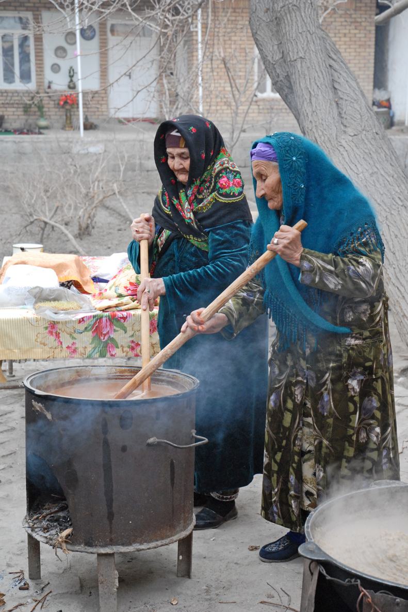

The revival of Navruz: from the Soviet era to a state holiday
Navruz is an ancient, pre-Islamic festival marking the spring equinox (around 21 March). In the Soviet era it was suppressed as a "religious-feudal relic" and at times banned. During the national awakening, around 1990, Navruz was restored as an official holiday. This history explainer sets out the revival and the international recognition of the festival on the basis of sources.

Navruz is a spring New Year festival celebrated widely across Central Asia, Iran, Afghanistan, Azerbaijan, the Caucasus and other regions. It falls on the day of the spring equinox (around 21 March). Below the history of the festival's revival is set out as sourced facts only; dates that are not firmly confirmed are flagged separately.
What Navruz is
"Navruz" means "new day" in Persian. It is an ancient, pre-Islamic festival whose roots reach back to Zoroastrianism; the United Nations notes that its history extends over three thousand years. UNESCO describes Navruz as "a traditional folk spring festival based on the worship of nature, the sun and the universe." In Uzbekistan one of its best-known traditions is sumalak — a sweet dish cooked overnight in a large cauldron from germinated wheat sprouts, stirred in turns and then shared with neighbors and relatives.
Its status in the Soviet era
In the Soviet era the celebration of Navruz was largely unofficial and at times banned; it was viewed as a "religious-feudal relic" of the old order. Sources describe the festival as suppressed and sometimes prohibited rather than permanently outlawed by a single standing law — so it is accurate to state it precisely in those terms.

Revival: around 1990
During the national-cultural awakening of the late 1980s (the perestroika era), Navruz was restored as an official holiday. Most sources state that it gained national-holiday status around 1990. At the same time, the exact instrument (decree) and precise date of the restoration are not firmly confirmed in an official primary source; it is therefore accurate to present this as "around 1990, during the national awakening." This process was part of reclaiming national identity, alongside the 1989 state-language law and the civic movements of the time.
After independence
Uzbekistan gained independence on 1 September 1991. After independence the state widely promoted Navruz as one of the main national holidays: it became an official non-working holiday celebrated every year on 21 March with large, state-organized public festivities.
International recognition
In 2009 Navruz was inscribed on UNESCO's Representative List of the Intangible Cultural Heritage of Humanity; Uzbekistan was among the seven states that nominated it in 2009 (together with Azerbaijan, India, Iran, Kyrgyzstan, Pakistan and Turkey). The list was later extended with other countries in 2016 and 2024. On 23 February 2010 the UN General Assembly, by resolution A/RES/64/253, proclaimed 21 March as the "International Day of Nowruz."
Conclusion
The revival of Navruz is one of the vivid symbols of the process of reclaiming national identity before and after independence. A festival suppressed in the Soviet era became first a national and then an internationally recognized holiday; today it is celebrated on 21 March in Uzbekistan and across the region.